mdl_fanuc10L
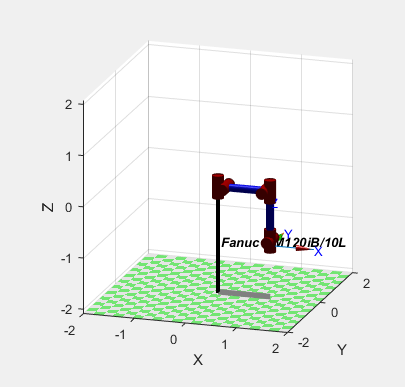
Posição: qz = [0 0 0 0 0 0]
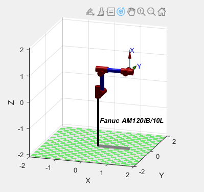
Posição: qr = [0 -pi/2 0 0 0 0]
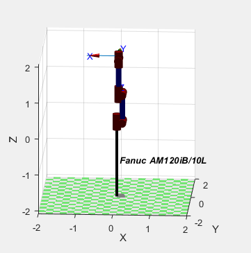
Posição: qs = [0 -pi/2 pi/2 0 0 0]
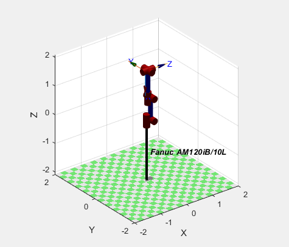
Posição: qn = [0 -pi/2 pi/2 0 pi/2 0]
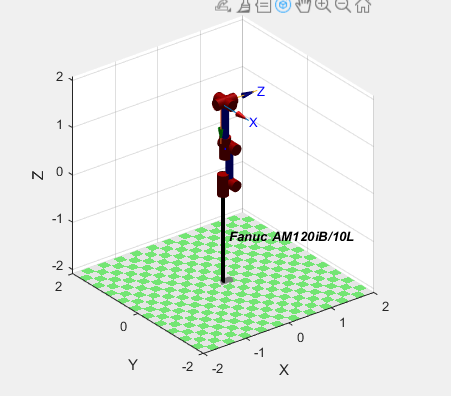
Posição: qx = [0 -pi/2 pi/2 0 pi/2 -pi/2]
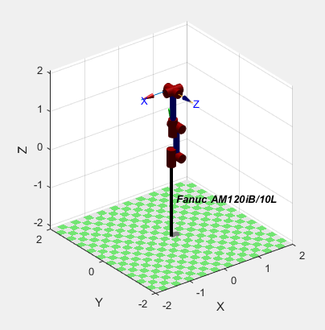
Posição: qy = [0 -pi/2 pi/2 pi/2 pi/2 -pi/2]
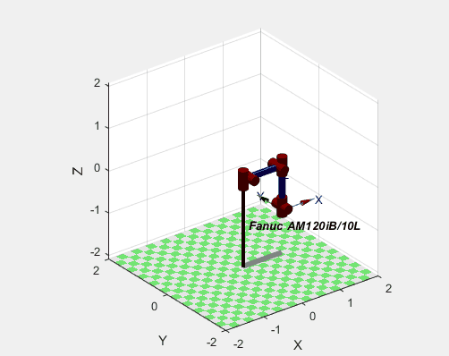
Animação do qz para o qr, ou seja, animação das juntas da
posição [0 0 0 0] para [pi/2 -pi/2 0 0]
Animação do qz para o qs, ou seja, animação das juntas da
posição [0 0 0 0] para [0 -pi/2 0 0 0 0]
Animação do qz para o qn, ou seja, animação das juntas da
posição [0 0 0 0] para [0 -pi/2 pi/2 0 pi/2 0]

Animação do qz para o qx, ou seja, animação das juntas da
posição [0 0 0 0] para [0 -pi/2 pi/2 0 pi/2 -pi/2]
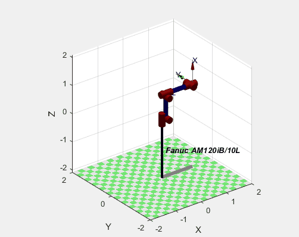
Animação do qr para o qn, ou seja, animação das juntas da
posição [0 -pi/2 0 0 0 0] para [0 -pi/2 pi/2 0 pi/2 0]
GUI:
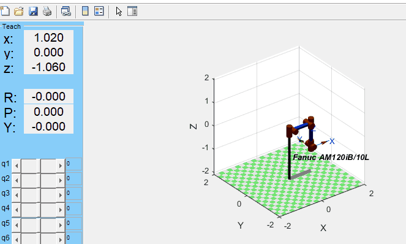
Usando a função teach para mostrar uma GUI, sendo que ao utilizar esta função podemos alterar as posições das juntas do robô de todas as formas possivies, começando na posição qz.
Parâmetros de Denavit-Hartenberg, fkine e ikine
Denavit-Hartenberg

Os parâmetros de Denavit–Hartenberg são quatro
parâmetros
associados a uma convenção para fixar sistemas de referência
aos elos de uma cadeia cinemática espacial, ou manipulador robótico:
theta: ângulo em torno do z anterior, do x anterior até o x.
d: distância ao longo do z anterior até a normal comum.
a: comprimento da normal comum. No caso de uma junta rotacional, este é o raio ao redor do z anterior.
alpha: ângulo em torno da normal comum, do z anterior ao z novo.
Neste caso como as juntas 1, 2, 3, 4, 5 e 6 são de rotação, no theta aparecem os q1, q2, q3, q4, q5 e q6 referindo-se a cada uma delas.
No a existem valores na junta 1, 2 e 3, que é o raio ao redor do z anterior. Relativamente ao alpha podemos confirmar que as juntas 1, 2, 3, 4 e 5 tem ângulo em torno da normal comum, do z anterior ao novo z.
theta: ângulo em torno do z anterior, do x anterior até o x.
d: distância ao longo do z anterior até a normal comum.
a: comprimento da normal comum. No caso de uma junta rotacional, este é o raio ao redor do z anterior.
alpha: ângulo em torno da normal comum, do z anterior ao z novo.
Neste caso como as juntas 1, 2, 3, 4, 5 e 6 são de rotação, no theta aparecem os q1, q2, q3, q4, q5 e q6 referindo-se a cada uma delas.
No a existem valores na junta 1, 2 e 3, que é o raio ao redor do z anterior. Relativamente ao alpha podemos confirmar que as juntas 1, 2, 3, 4 e 5 tem ângulo em torno da normal comum, do z anterior ao novo z.
Fkine
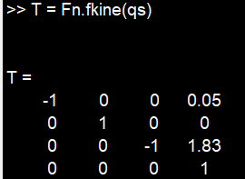
Usando a função fkine da pose qs para ir buscar a
transformação homogênea que representa a pose.
Ikine
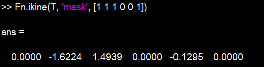
A função ikine são as coordenadas conjuntas (1 x N)
correspondentes à pose do efetor final do robô T (6x6),
que é uma transformação homogênea.
Tictok
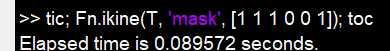
Função tic e toc serve para saber o intervalo de tempo que
dura para que o matlab faça um determinado calculo.
Código:
L(1) = Link([0 0 0.15 -pi/2 0 ]);
L(2) = Link([0 0 0.77 pi 0 ]);
L(3) = Link([0 0 0.1 -pi/2 0 ]);
L(4) = Link([0 -0.96 0 pi/2 0 ]);
L(5) = Link([0 0 0 -pi/2 0 ]);
L(6) = Link([0 -0.1 0 0 0 ]);
Fn=SerialLink(L, 'name', 'Fanuc AM120iB/10L');
qz=[0 0 0 0 0 0]
qr=[0 -pi/2 0 0 0 0]
qs=[0 -pi/2 pi/2 0 0 0]
qn=[0 -pi/2 pi/2 0 pi/2 0]
qx=[0 -pi/2 pi/2 0 pi/2 -pi/2]
qy=[0 -pi/2 pi/2 pi/2 pi/2 -pi/2]
qzr = jtraj(qz,qr,50);
qzs = jtraj(qz,qs,50);
qzn = jtraj(qz,qn,50);
qzx = jtraj(qz,qx,50);
qrn = jtraj(qr,qn,50);
Fn
T = Fn.fkine(qs)
Fn.ikine(T, 'mask', [1 1 1 0 0 1])
tic; Fn.ikine(T, 'mask', [1 1 1 0 0 1]); toc
mdl_stanford
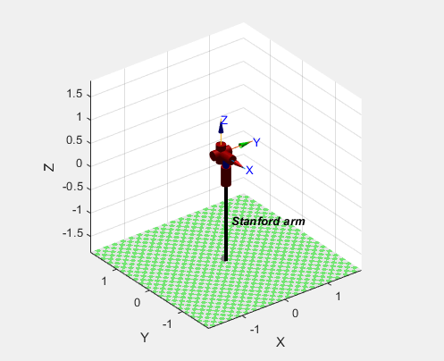
Posição: qz = [0 0 0 0 0 0]
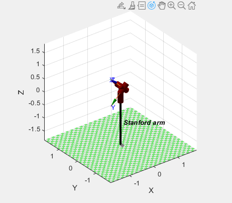
Posição: qr = [pi pi/4 0 0 0 0]
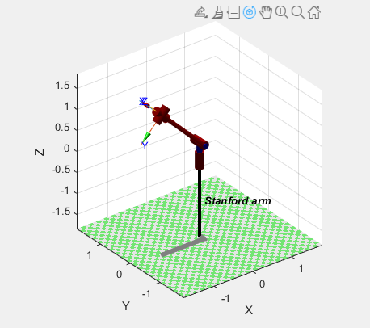
Posição: qs = [pi pi/4 pi/2 0 0 0]
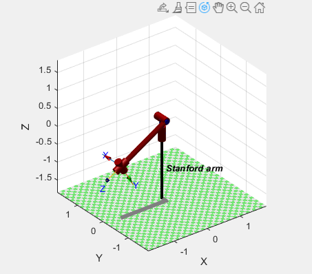
Posição: qn = [pi pi/1.5 pi/2 0 0 0]
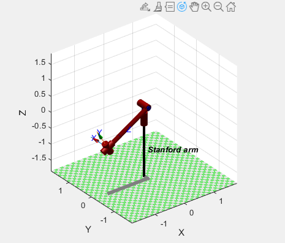
Posição: qx = [pi pi/1.5 pi/2 pi pi 0]
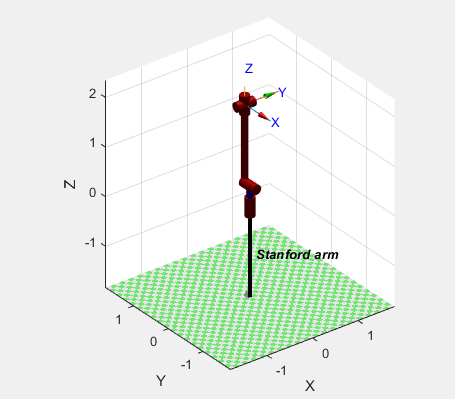
Posição: qy = [0 0 pi/2 0 0 0]
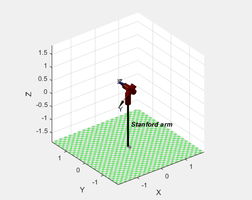
Animação do qz para o qr, ou seja, animação das juntas da
posição [0 0 0 0 0 0] para [pi pi/4 0 0 0 0]
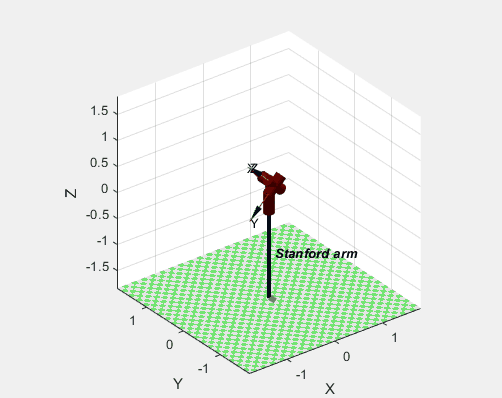
Animação do qr para o qs, ou seja, animação das juntas da
posição [pi pi/4 0 0 0 0] para [pi pi/4 pi/2 0 0 0]
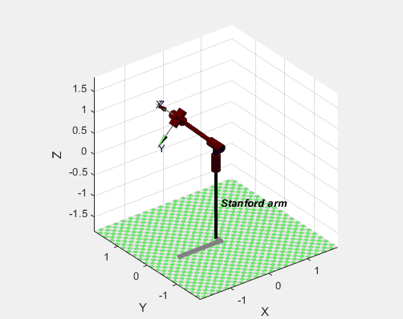
Animação do qs para o qn, ou seja, animação das juntas da
posição [pi pi/4 pi/2 0 0 0] para [pi pi/1.5 pi/2 0 0 0]
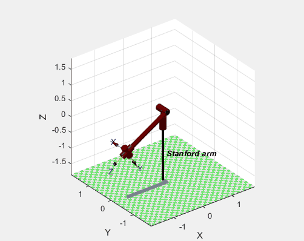
Animação do qn para o qx, ou seja, animação das juntas da
posição [pi pi/1.5 pi/2 0 0 0] para [pi pi/1.5 pi/2 pi pi 0]
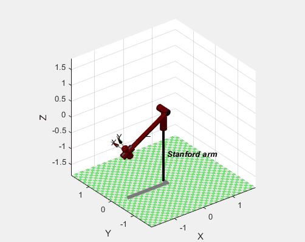
Animação do qx para o qy, ou seja, animação das juntas da
posição [pi pi/1.5 pi/2 pi pi 0] para [0 0 pi/2 0 0 0]
GUI:

Usando a função teach para mostrar uma GUI, sendo que ao utilizar esta função podemos alterar as posições das juntas do robô de todas as formas possivies, começando na posição qz.
Parâmetros de Denavit-Hartenberg, fkine e ikine
Denavit-Hartenberg

Os parâmetros de Denavit–Hartenberg são quatro parâmetros
associados a uma convenção para fixar sistemas de referência
aos elos de uma cadeia cinemática espacial, ou manipulador robótico:
theta: ângulo em torno do z anterior, do x anterior até o x.
d: distância ao longo do z anterior até a normal comum.
a: comprimento da normal comum. No caso de uma junta rotacional, este é o raio ao redor do z anterior.
alpha: ângulo em torno da normal comum, do z anterior ao z novo.
Neste caso as juntas são de rotação, no theta aparecem os q1, q2, q4, q5 e q6 referindo-se a cada uma delas. Existe uma juntas de translação o q3 que corresponde ao d.
No a não existem valores nas junta, consequentemente, o raio ao redor do z anterior. Nas junta 1, 2, 3, 4, 5 e 6 não tem comprimento da normal comum.
Relativamente ao alpha podemos confirmar que apenas as juntas 1, 2, 4 e 5 têm ângulo em torno da normal comum, do z anterior ao novo z.
theta: ângulo em torno do z anterior, do x anterior até o x.
d: distância ao longo do z anterior até a normal comum.
a: comprimento da normal comum. No caso de uma junta rotacional, este é o raio ao redor do z anterior.
alpha: ângulo em torno da normal comum, do z anterior ao z novo.
Neste caso as juntas são de rotação, no theta aparecem os q1, q2, q4, q5 e q6 referindo-se a cada uma delas. Existe uma juntas de translação o q3 que corresponde ao d.
No a não existem valores nas junta, consequentemente, o raio ao redor do z anterior. Nas junta 1, 2, 3, 4, 5 e 6 não tem comprimento da normal comum.
Relativamente ao alpha podemos confirmar que apenas as juntas 1, 2, 4 e 5 têm ângulo em torno da normal comum, do z anterior ao novo z.
Fkine
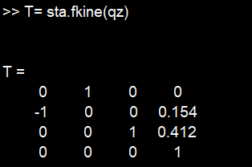
Usando a função fkine da pose qs para ir buscar a
transformação homogênea que representa a pose.
Ikine
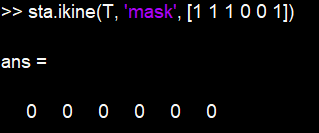
A função ikine são as coordenadas conjuntas (1 x N)
correspondentes à pose do efetor final do robô T (6x6),
que é uma transformação homogênea.
Tictok

Função tic e toc serve para saber o intervalo de tempo que
dura para que o matlab faça um determinado calculo.
Código:
>> % th d a alpha
L(1) = Link([ 0 0.412 0 -pi/2 0]);
L(2) = Link([ 0 0.154 0 pi/2 0]);
L(3) = Link([ -pi/2 0 0 0 1]); % PRISMATIC link, faz com que o braço do nosso robô se
estenda
L(4) = Link([ 0 0 0 -pi/2 0]);
L(5) = Link([ 0 0 0 pi/2 0]);
L(6) = Link([ 0 0 0 0 0]);
%theta = ângulo da articulação
%d = offset do link da posição inicial
%a = length do link
%alpha = orientação do link (em radianos)
%limita até onde as juntas(joints) podem ir [min max]
L(1).qlim = [-170 170]*pi/180;
L(2).qlim = [-170 170]*pi/180;
L(3).qlim = [12 12+38] * 0.0254;
L(4).qlim = [-170 170]*pi/180;
L(5).qlim = [-90 90]*pi/180;
L(6).qlim = [-170 170]*pi/180;
>> sta = SerialLink(L, 'name', 'Stanford arm');
>> %posições do nosso robô
qz = [0 0 0 0 0 0];
>> qr = [pi pi/4 0 0 0 0];
>> qs = [pi pi/4 pi/2 0 0 0];
>> qn=[pi pi/1.5 pi/2 0 0 0];
>> qx = [pi pi/1.5 pi/2 pi pi 0];
>> qy = [0 0 pi/2 0 0 0];
>> %animação entre duas posições e o tempo de animação
>> qzr = jtraj(qz,qr,50);
>> qrs = jtraj(qr,qs,50);
>> qsn = jtraj(qs,qn,50);
>> qnx = jtraj(qn,qx,50);
>> qxy = jtraj(qx,qy,50);
>> sta
>> T= sta.fkine(qz)
>> sta.ikine(T, 'mask', [1 1 1 0 0 1])
>> tic; sta.ikine(T, 'mask', [1 1 1 0 0 1]); toc
Dev
Este site serve como relatório do projeto da cadeira de Sistemas de Robótica lecionada pelo Professor Laércio Cruvinel. Projeto desenvolvido por: David Mezia, José Pedreira, Marcelo dos Santos, Rafael Rocha e Tomás Reis
![]()